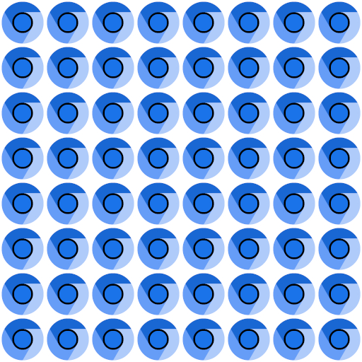

Loading...
WebGL Water
Made by Evan Wallace
Modified by Alex313031
This demo requires a decent graphics card and up-to-date drivers. If you can't run the demo, you can still see it on YouTube.
Interactions:
- Draw on the water to make ripples
- Drag the background to rotate the camera
- Press SPACEBAR to pause and unpause
- Drag the sphere to move it around
- Press the L key to set the light direction
- Press the G key to toggle gravity
Features:
- Raytraced reflections and refractions
- Analytic ambient occlusion
- Heightfield water simulation *
- Soft shadows
- Caustics (see this for details) **
* requires the OES_texture_float extension
** requires the OES_standard_derivatives extension
Tile texture from zooboing on Flickr.
